On foot
Last we left Raymon, he had scrounged together some meagre gear and a sturdy spear and was about to hike north west toward the refugee center.
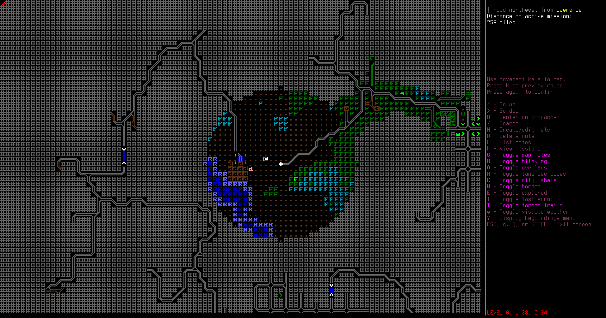Striking out across the field, Raymon headed toward the regional dump near the evac shelter. It wasn't far as the crow flies, though not connected by road anywhere nearby.

This is some form of otherworldly hound. Lean and hungry-looking, its twisted red flesh is stretched tightly across its misshapen, angular frame. Loping grotesquely along, its unusually long neck stretches forward, its skull-like head near the ground as it sniffs out its prey. Its foulness partially veiled by some arcane force, it seems to almost flicker in and out of your perceptions in a fashion that awakens ancient nameless terrors in the back of your mind.
A strange red monster comes into view, hanging just outside the barbed wire fence surrounding the dump. It doesn't seem to notice Raymon, but he's not taking any chances. Taking chances is how he'll die. He goes further north, toward the main entrance.
 As he walks furtively north, looking over his shoulder to make sure the creature doesn't chase him, he sees it lunge at a frightened chipmunk that scrambles away from the beast's long gaping jaws.
As he walks furtively north, looking over his shoulder to make sure the creature doesn't chase him, he sees it lunge at a frightened chipmunk that scrambles away from the beast's long gaping jaws.

Raymon spots movement among the dumpsters at the near corner of the dump. A huge fly, so big it might have been a balloon, buzzes lazily over the barbed wire. Behind it are two stumbling figures. One is big and bloated. The other crawls with its forelimbs, its legs mangled beyond belief. They reach for the fly and seem to wave at him across the field. He recoils in horror and moves on toward the entrance.

There's one of the cutting-edge solar cars parked in front of the dump. Raymon gets excited for a moment—most of the panels and the cab are in good shape—but then he sees that the tires are shot. He moves further toward the dump, cautiously. There are huge black rats moving in and out of the mountains of trash, with teeth as big as his hand.

When Raymon gets close enough he sees a big flatbed truck in pretty good condition sitting there in the parking lot of the dump. It's got all its wheels! If he can get it working, he'd feel so much safer.
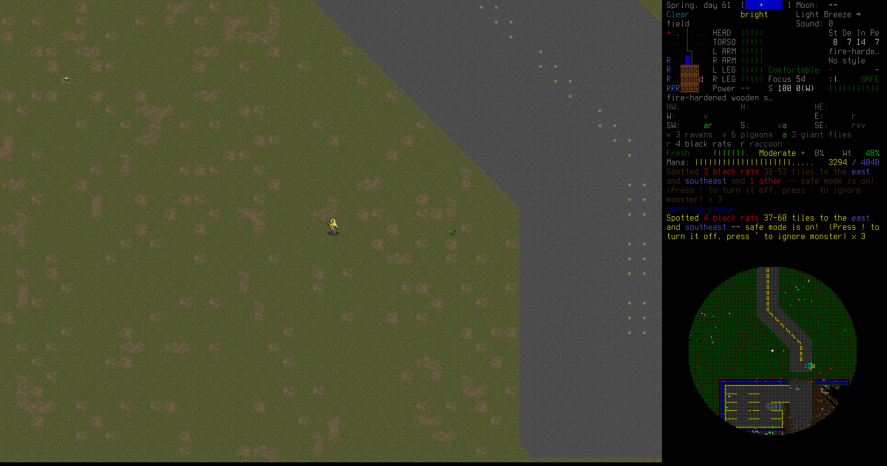Raymon walks along the road toward the dump to get at the truck. All the rats put him on edge, high alert.
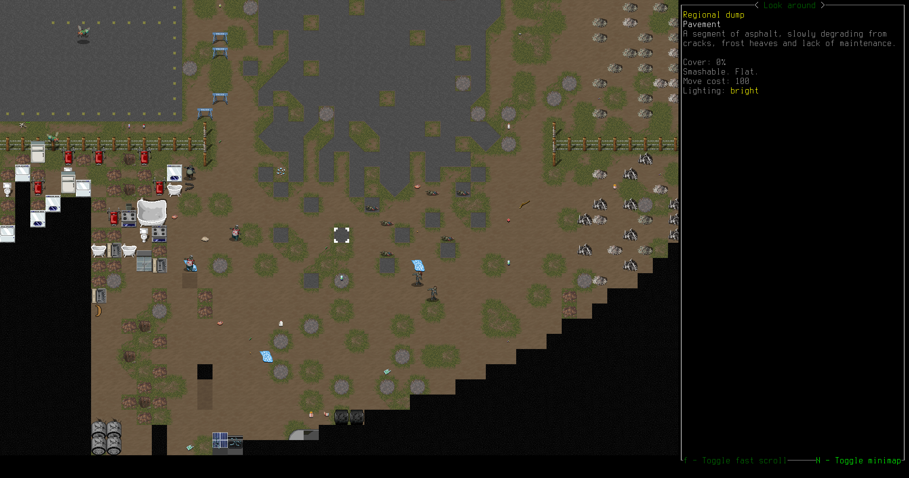Getting closer he can see that the dump is filled with zombies. They shamble among the old appliances and bathtubs and stumble over metal piles and old cars. They start to notice him as he walks up to the truck.

Raymon gets to the truck door before the zombies reach the other side. He flings it open and pokes his head inside.

It'd run. The truck would run. It's got gas. He starts frantically searching for keys anywhere in the truck, maybe in the glove box? Maybe in the console? The zombies get closer, and another massive fly casts a long shadow on the ground and buzzes as loud as if it were right next to his ear.

There were no keys in the truck, and he doesn't have time to hotwire it. The zombies are almost knocking on the other side of the truck. Raymon jumps out and runs for the fence. The shambling zombies can't get around the truck quick enough to catch him, and soon he's on the other side of the fence.
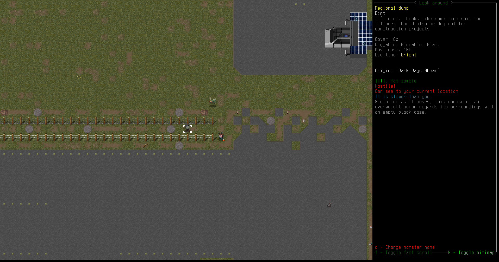The zombies get stuck in the barbed wire, cutting their flesh and clothes in their vain attempt to get at him. Eventually they seem to lose interest.
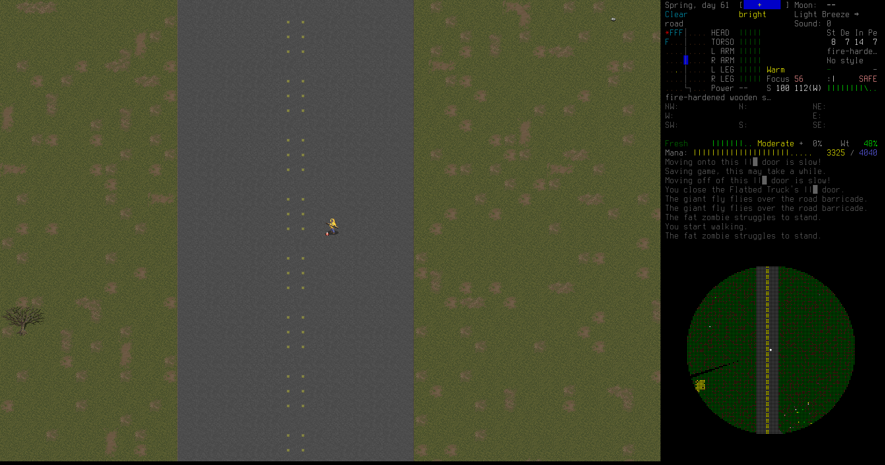Raymon gets out of there and walks north along the road, past a swampy area.
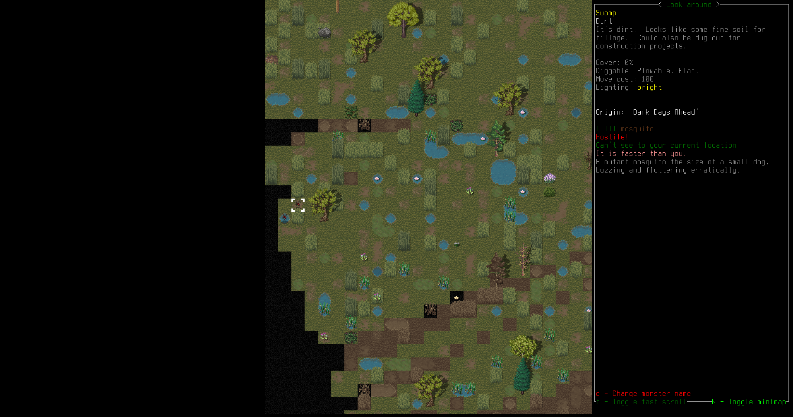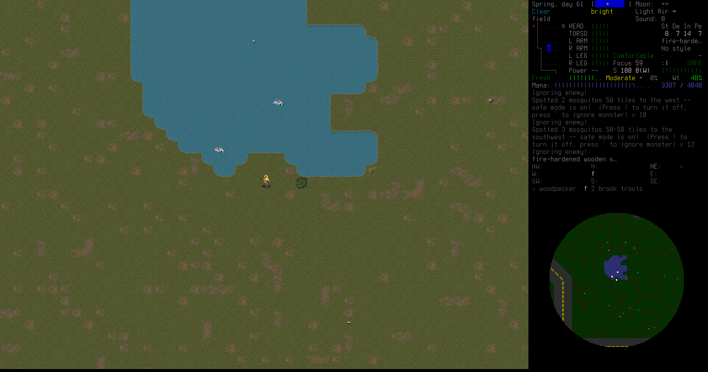A mutant mosquito the size of a small dog, buzzing and fluttering erratically.
Finally a normal sight: fish playing in a pond. Raymon just stands by the pond for a few moments and contemplates what his life has come to. Then he's on his way again
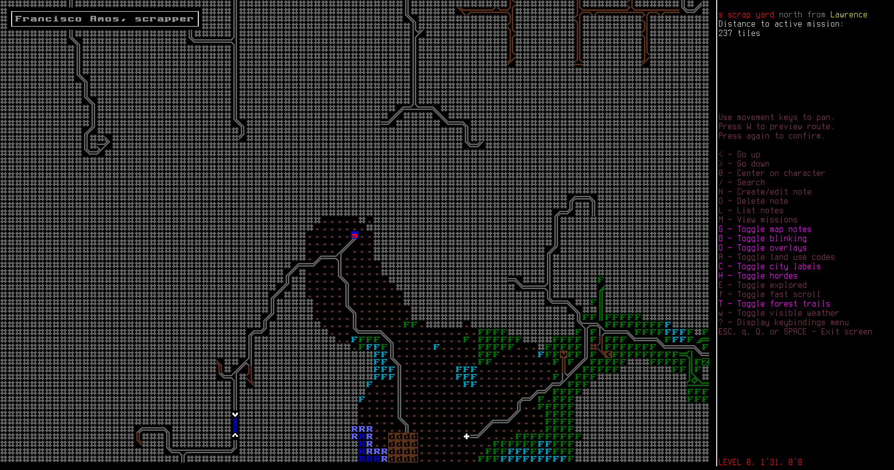To the north, Raymon sees a little scrap yard jutting off the roadway. Maybe there's something left for him to scavenge.

There's a tow truck in pristine condition sitting in the driveway, and the place looks kept. Raymon goes to the little office building and slowly pushes the door aside.

There's a man behind the counter in a workmans outfit, sitting with his feet up on a wooden chair, a huge crowbar within arms reach, a rifle holstered on his back. They stare at each other for a few moments of disbelief.

Francisco Amos, scrapper: Haven't seen another face in quite a while. Not a living one, at least. State your business. Maybe you got some use for some of this scrap metal?
Raymon talks with this guy for a bit. Basically, he was a working at the scrap yard on a solo shift when the cataclysm hit. He decided to just stay here, and now he's selling scrap metal to anyone passing by. He fortified his scrap yard. He even offers that Raymon can sleep in the shed out back, where there's a little cot, but Raymon has to be on his way.

If we wanted, we could trade items with the scrapper for, well, scrap metal of all varieties. This might be useful later, but scrap metal isn't important for our journey to the refugee center.
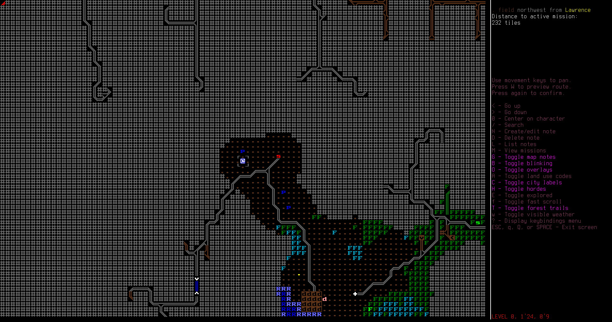After saying goodbye to the first human he's seen since the cataclysm, Raymon continues his journey out into the unknown.
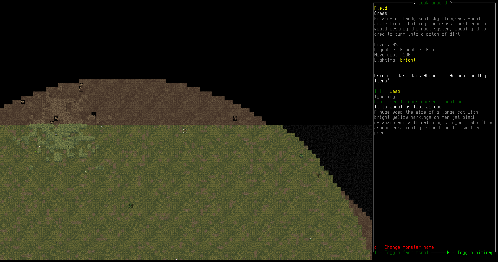A huge wasp the size of a large cat with bright yellow markings on her jet-black carapace and a threatening stinger. She flies around erratically, searching for smaller prey.
Raymon stays far away from that, though secretly he thinks he might have a shot with the new magic missile he's learned.


There's a massive sinkhole opened in the field here, he peeks down and sees some water, but there's nothing for him here.

Finally, after a long walk, he reaches the edge of a forest. He starts stumbling through the brush and trees, heading north toward where he knows a road will be.

But in the distance, he spots a campground with tents and tables!
Campground
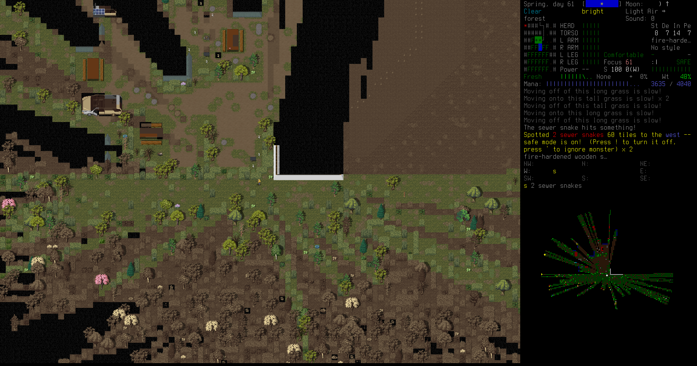Yes, it's a campground! There's a lightweight electric solar car on the far side of the campfire, and an SUV closer to him, parked by the abandoned tents. Both cars look in good shape, and Raymon's heart gives a flutter.

To the west is a strange stone building with snakes swimming and diving in the water surrounding it. Raymon just keeps his distance and stays in the campground.

The SUV works. One of its gas tanks is leaking, but the other has over seven liters in it. The battery is draining, however, and that means that unless Raymon can get a new battery, this car will be useless.
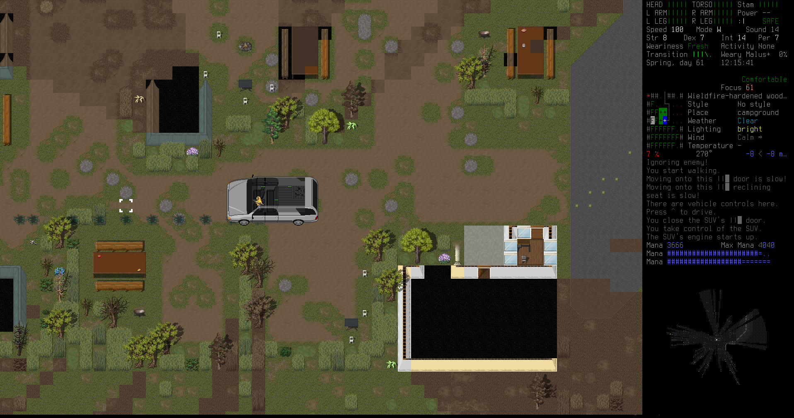Raymon backs the SUV out of the campground to the road and puts it in park. He'll deal with the battery situation later.

The electric car is fully functional, though its solar panels are heavily damaged and one of its batteries has given out. An electric car would be extremely useful because it can just charge from its solar panels without ever needing to scavenge fuel, but this one charges so slowly it might not be practical to wait weeks just to travel a few miles.

Raymon drives this car out to the road too, just in case.

Then Raymon loots the campground for canned goods and other stuff.
 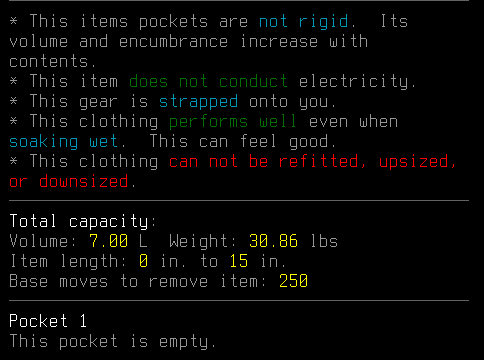
He finds a runner pack in one of the tents. It's smaller than his makeshift sling, but he straps it on too. More space to carry stuff is good, and the runner pack could be better long term.
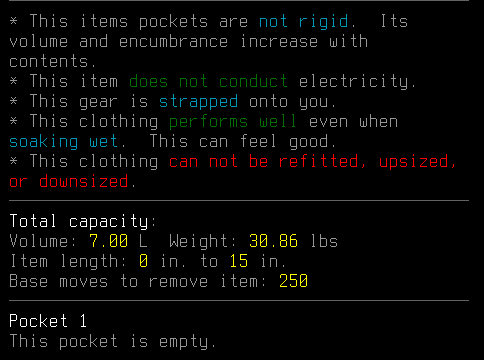
He finds a runner pack in one of the tents. It's smaller than his makeshift sling, but he straps it on too. More space to carry stuff is good, and the runner pack could be better long term.

Raymon takes down one of the tents and hauls it toward the cars. It's time to make a decision. Does he dump everything in the electric car and drive as far as it can take him, then just wait as it recharges? Or does he go find a battery for the SUV, and just deal with scavenging fuel? Raymon decides on the SUV. It shouldn't be to hard to find a working car battery somewhere in an abandoned car, nor gasoline. He doesn't want to be stranded with a finicky, lightweight electric car when he could be cruising past zombies in an SUV.

He drops all of his looted supplies into the big trunk of the SUV. Now it's time to find a battery. The electric car still has a little charge, so Raymon hops in to go scout north and see if there are any abandoned cars.

He drives north for a little ways.

Eventually a huge building looms up in front of him beside the road, high brick walls reaching toward the sky, some kind of research facility if he had to guess. He hears an explosion, and up ahead part of the brick wall collapses.
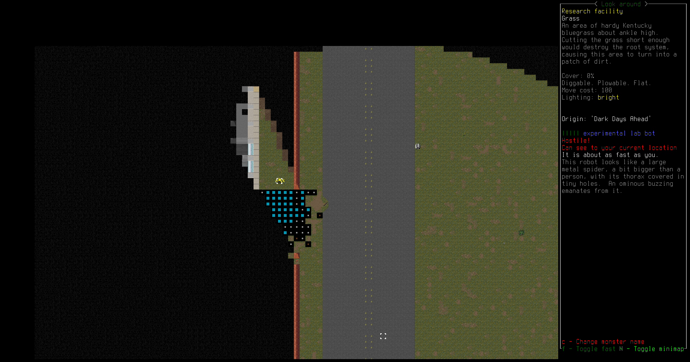This robot looks like a large metal spider, a bit bigger than a person, with its thorax covered in tiny holes. An ominous buzzing emanates from it.

Nope. Raymon shifts into reverse and hits the accelerator.

He backs up all the way to the campground.
Battery heist
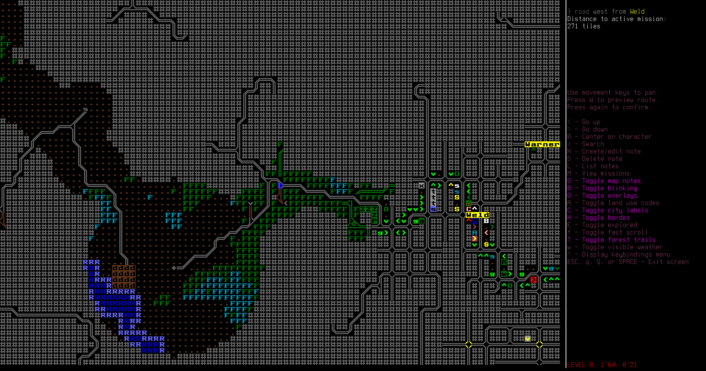Time for plan B. He remembers the wrecked car in front of one of those houses near the evac shelter. Maybe it had a battery? He can't remember, but he'll walk all the way back to check. It's not that far.
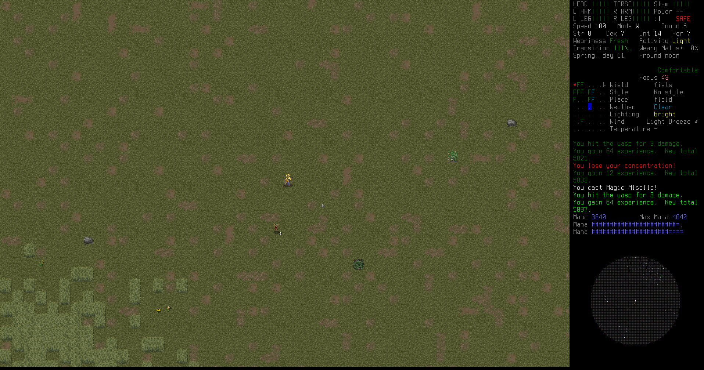As Raymon walks, one of the huge cat-size wasps swoops down from nowhere and starts charging him, darting this way and that. There's no way he could hit that thing with his spear, so he drops his spear and remembers what he read from the magic pamphlet. Magic missile! The first missile pierces the wasp's chitin, and a few more send it fleeing.

Another big wasp comes buzzing at him, but this time he's ready. He drops his spear again and raises his hands.

A few magic missile's later, and that wasp is dead. It couldn't get away from Raymon, no! He shakes his head. Something's wrong with his brain, why is he so aggressive? He doesn't know.
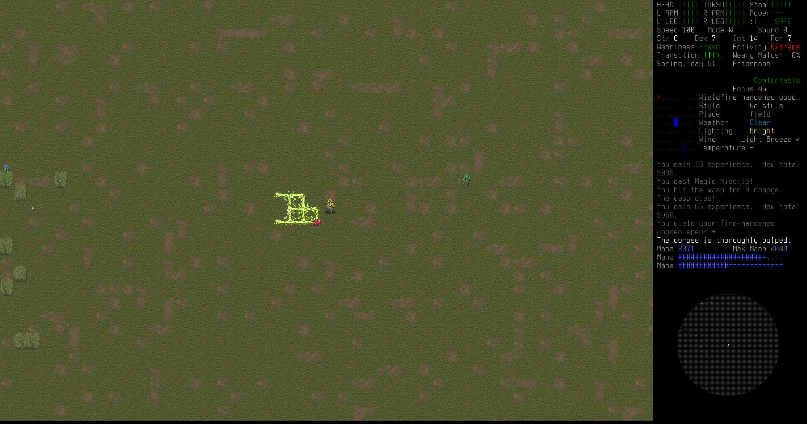He smashes the wasp to a pulp with his boot, just for attacking him, then walks the rest of the way to the wrecked car.

It doesn't have a battery. Raymon chuckles coldly. He decides to head north through the forest as he cuts back to the campground, maybe there'll be a car with a battery on the road up that way.

Raymon reaches the road, but spots a strange strange snakelike shadow flying through the air. He heads the other way, toward a golf course.

The golf course is almost peaceful, and still looks good too. Raymon walks over the green toward the club house. Is that a person over by the club house, holding a crowbar and talking with someone?
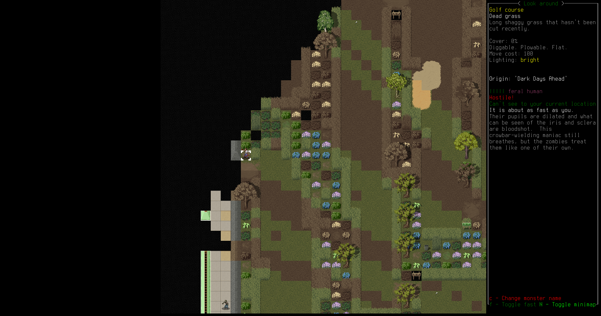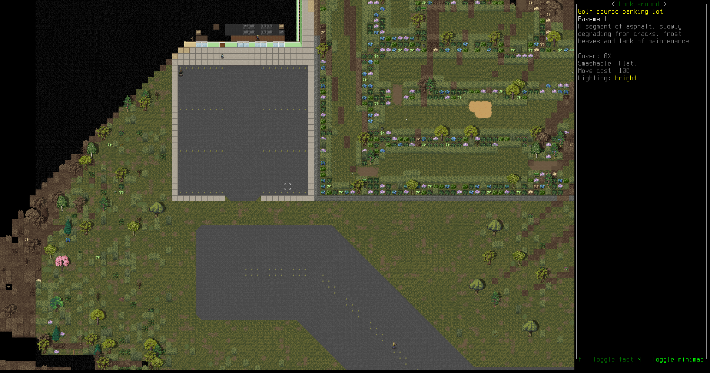Their pupils are dilated and what can be seen of the iris and sclera are bloodshot. This crowbar-wielding maniac still breathes, but the zombies treat them like one of their own.
The presence of these strange people walking among the shambling zombies fills Raymon with a cold dread. He sneaks around the bottom of the golf course, past the club house.

Something about the golf course scared Raymon. He just wants to get out of this place and get to the refugee center. It doesn't really matter how. He starts to concoct a plan. That scapper, Francisco Amos, had a tow truck in perfect condition, except it had no front wheels. It wasn't going anywhere. What if... What if Raymon stole the trucks battery? He'd have to make it stealthy, or the scrapper would no doubt pull out his rifle or beat him to death with his crowbar, but if he could just get that battery... The more Raymon thought about it the more he liked the idea. The scrapper would be fine, of that he was sure. It would be easy for a survivor like him to find another battery. Yes, that's what Raymon'd do. He'd steal the battery from the scrappers tow truck.

Raymon walks through the forest toward the scrapyard.

He's back, and his heart is pounding as he begins his heist.

First he goes into the office, and when Franciso isn't really paying attention, he closes the curtains. They were almost closed anyway, but this way the scapper won't be able to see what's going on in the driveway.

Then Raymon slips outside and removes the battery. It takes less than a minute, and the scrapper suspects nothing.

He drags the battery out a ways from the scrap yard, but is forced to leave behind his spear to carry it further. That's OK, he'll be back.
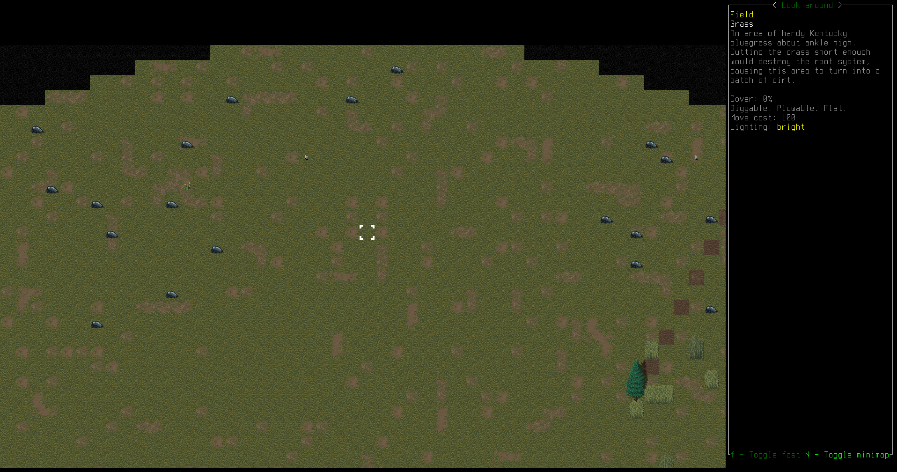Walking back to the campground, he sees the field to the north is just covered in the moving blobs of slime, some big, some small, just glooping around the grass aimlessly. He moves on quickly.
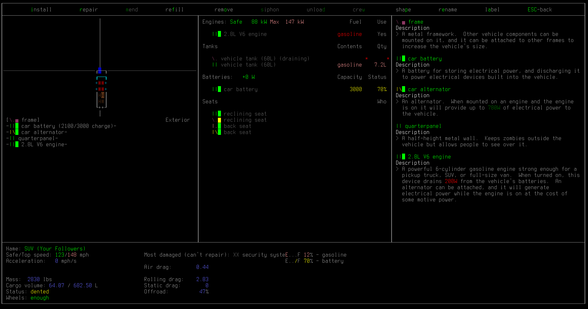Boom. The battery is installed, and Raymon has a working SUV. He even has a decent amount of gasoline. But he's going to need more to keep this car running, and he doesn't think that the pumps are exactly the best place to get gas right now. Raymon needs a hose to siphon gas from other abandoned cars. One of the refrigerators in the houses by the evac shelter should have one, he'll just need to smash it up a bit to get to the internals.
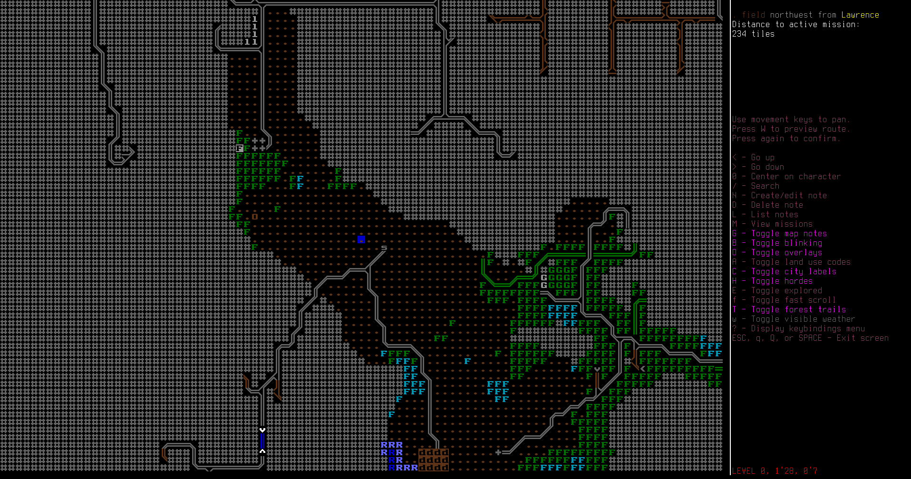
First, though, Raymon drives down to where he left his spear and picks it up again. Even if magic missile is a good weapon, a spear in hand is just... comforting.
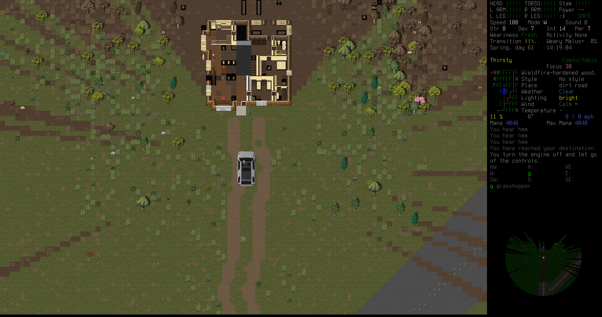Raymon arrives back at the house by the evac shelter.

He tries to pry apart the refrigerator, but only manages to damage his spear. Oh well.

He goes outside, smashes a bench, and gets one of the sturdy planks. This will serve.
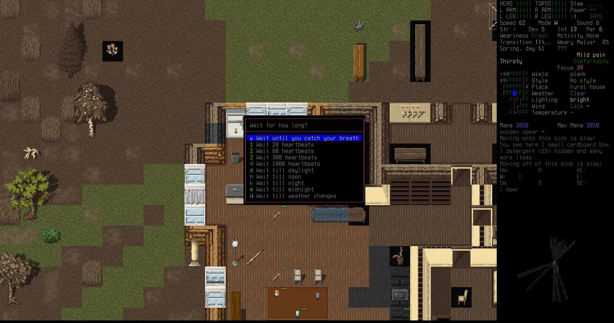He catches his breath before smashing down the refrigerator
 This rubber hose will serve well for siphoning gas out of people's abandoned cars and into his own.
This rubber hose will serve well for siphoning gas out of people's abandoned cars and into his own.

He takes advantage of having the trunk space in his SUV and loots some of the books he had to leave behind before. Raymon is a bookworm, and there'll probably be something useful in these volumes.
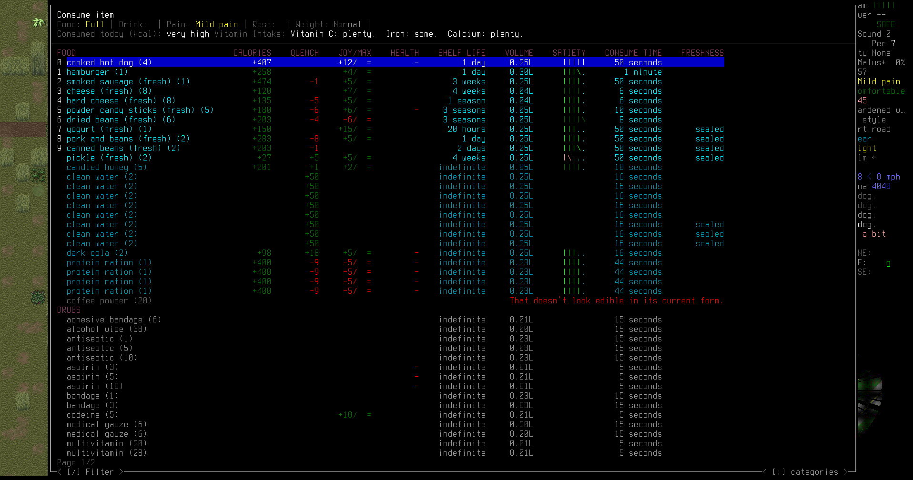Back in his car, Raymon downs a bottle of water and four hot dogs. He feels satisfied and ready to take on the world.

He drives back to the fork in the road beneath the scrapper, but decides to head south west for now instead of north west, to see if there's a cleaner way to cut around and avoid the research facility.
On the road again

There's a huge stone... mountain? castle? beside the road, but Raymon doesn't stop to investigate, he just keeps heading south along the road.
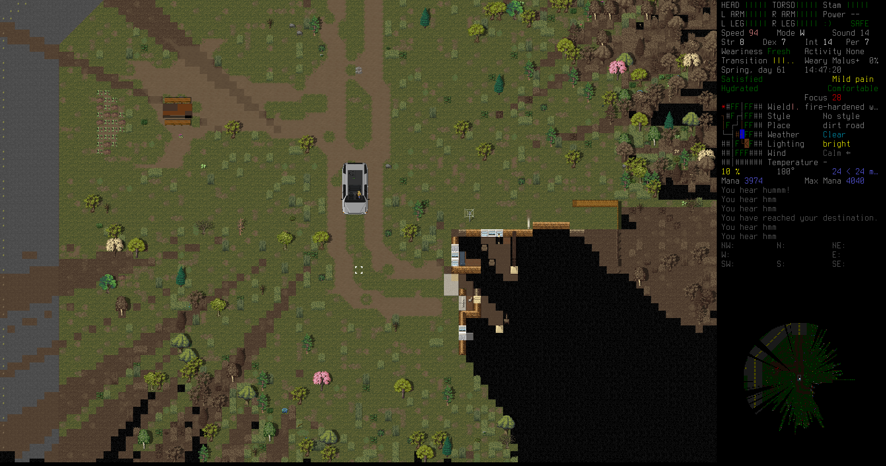Another house comes into view, and Raymon parks in the driveway. There might be some more supplies to scavenge, and now that he has a car he doesn't have to leave anything important behind.

Some books are always good. Raymon snaps these up.
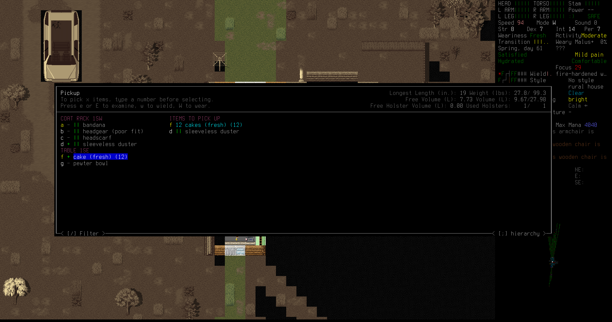A sturdy canvas duster could be useful for wearing or for scraps to make something else. There's a platter of cake that still smells good, Raymon takes that too. Whoever used to live here won't mind.
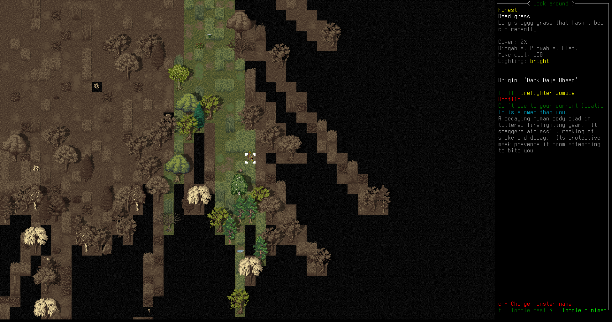A flicker of movement to the south makes Raymon peer out the window, where a zombie stands in the forest wearing firefighter gear.
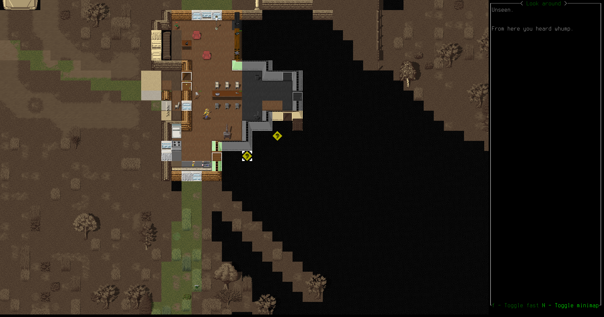Suddenly on high alert, Raymon hears whumping noises from the bedroom.

He hears more thumping as he loots some nonperishable foods from the pantry closet.

Creeping around, he stealthily opens the bedroom door and peeks his head inside. There's a zombie in the closet.

Raymon slams the door shut. No need to fight, right? He heads to the other bedroom door...

...and is met with a zombie in his face!
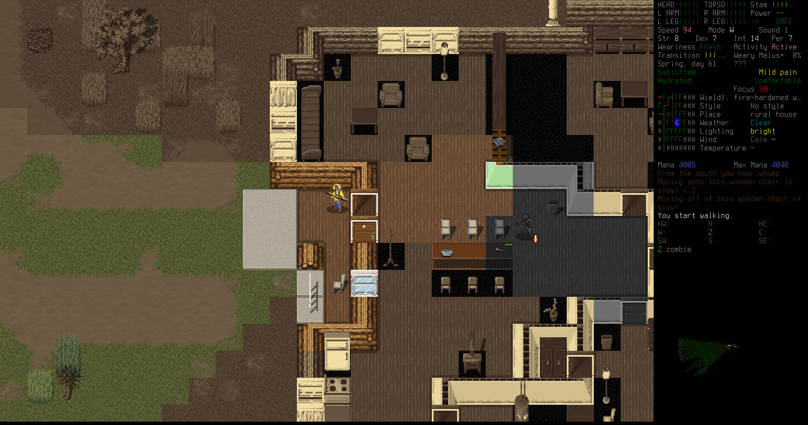Raymon runs, dodging chairs and tables to get outside. The zombie stumbles after him, groaning low in its throat.
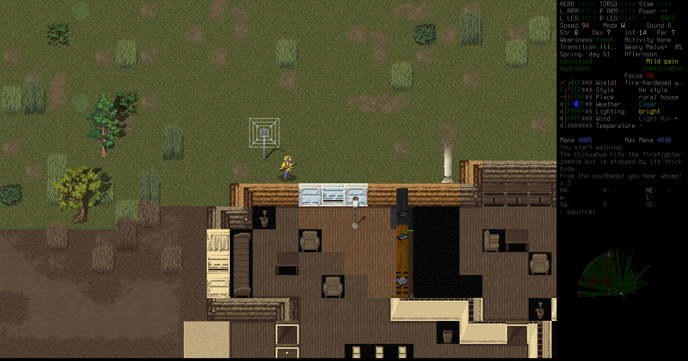Raymon runs around the house to the other side.

He smashes in a window and gets into the bedroom from outside.
 These hard leg guards will serve well to protect him. He straps them on, listening intently for any sound of the zombie coming around.
These hard leg guards will serve well to protect him. He straps them on, listening intently for any sound of the zombie coming around.
Raymon decides he wants to search the other bedroom too. He'll juke the zombie in there the same way he did the first one, by running around the house.
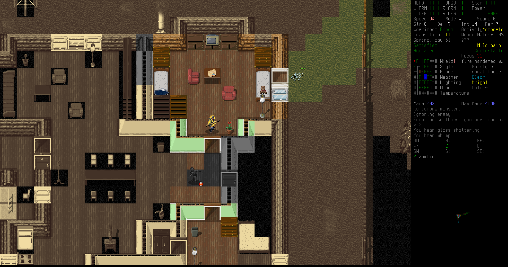He opens the door and lures the zombie toward the other bedroom.
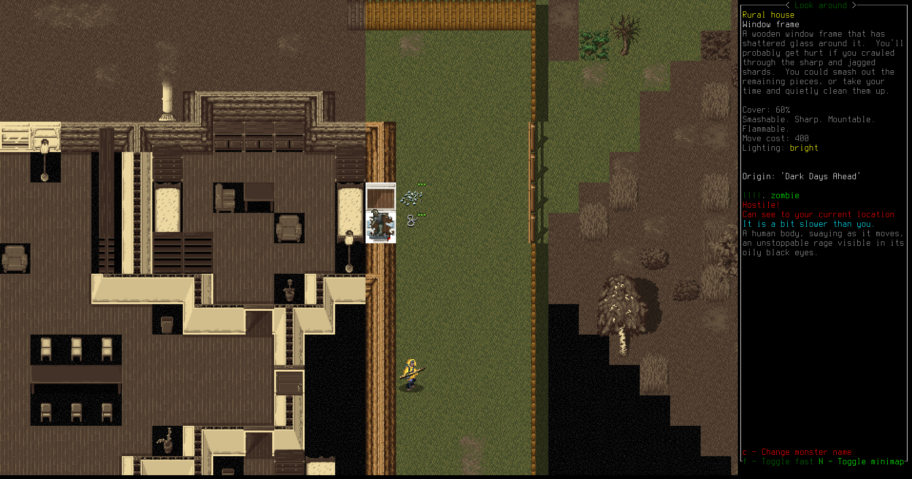Then he plays the roundabout again. The zombie cuts itself on the shards of glass in the window.

He couldn't shake it, and now the zombie is way too close for comfort.

Raymon runs out of the bedroom and shuts the door. The zombie bangs lazily on the door, and groans, but it doesn't know how to use a doorknob anymore.

Jumping the oven, Raymon leaves via window.

The firefighter zombie sees him, and is steadily approaching.

Raymon drops his spear, and his hands start to crackle with magic missile.
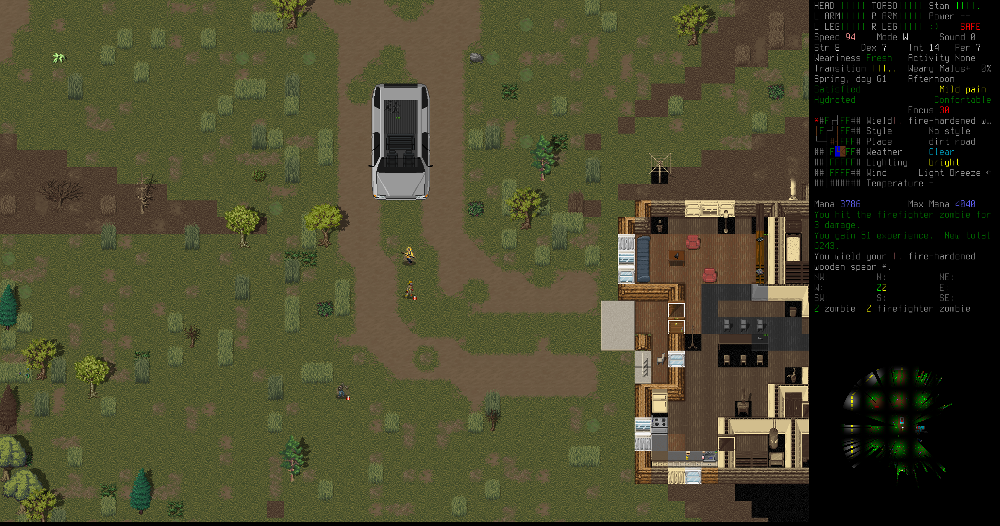But his magic is too weak, and the firefighter zombie is almost grabbing him. Raymon picks his spear up and sprints to his SUV.

He reverses out of there with the door still open. Running away is a victory. He's still alive.

Raymon heads south again, toward a bridge across a little river.

Up on the bridge he gets a look at his surroundings. Doesn't seem like much, but he'll scout a little further before deciding which route to take to the refugee center.